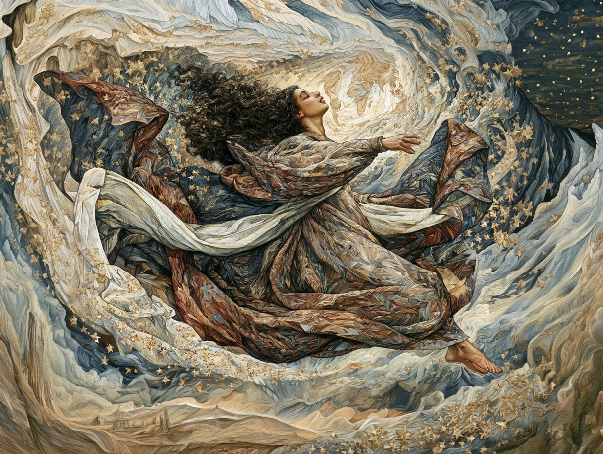

Сила РАДОСТИ | Всегда радуйтесь !

Бог устроил так, что когда мы собираемся вместе, радуемся и празднуем перед Ним, это обладает огромной силой.
Что нужно человеку
Чтобы жить, человеку нужно дышать, есть, пить и спать. Но этого мало: ему нужно быть любимым и знать, ради чего он живет. Удивительно, что Писание, обращаясь к человеку, настаивает еще на трех вещах — на радости, поклонении и памяти: «веселись в праздник твой» (Втор. 16:14), «Господу Богу твоему поклоняйся» (Мф. 4:10), «помни весь путь, которым вел тебя Господь Бог твой» (Втор. 8:2).
Кажется, что радость, поклонение и память сами собой разумеются. Но попробуй представить, что происходит, когда они уходят из жизни. Если меня долго ничто не радует, я перестаю ждать чего-либо от завтрашнего дня. Если я забываю путь, которым Бог меня вел, мне труднее довериться Ему сегодня. Если в моем поклонении нет любви, я могу произносить правильные слова и при этом оставаться, по слову апостола, «медью звенящею или кимвалом звучащим» (1 Кор. 13:1).
И, может быть, самое страшное для человека — потерять ответ на простой вопрос: ради чего я живу?
Бог настаивает на радости
Радость в Писании — не пожелание, а повеление. Апостол Шауль (Павел) пишет: «Радуйтесь всегда в Господе; и еще говорю: радуйтесь» (Флп. 4:4), и снова: «Всегда радуйтесь» (1 Фес. 5:16). Повторение показывает, насколько это важно.
Еще резче сказано в Торе. Среди причин бедствий, которые постигнут Израиль, названа и такая: «За то, что ты не служил Господу Богу твоему с веселием и радостью сердца, при изобилии всего, будешь служить врагу твоему, которого пошлет на тебя Господь» (Втор. 28:47–48). Служение без радости поставлено здесь в один ряд с непослушанием. Для Бога важно не только то, что мы делаем, но и то, с каким сердцем мы это делаем.
Праздник до начала мира
Писание показывает праздник, который состоялся еще до начала истории, при сотворении мира. О нем говорит Мудрость в книге Притчей:
«Когда Он уготовлял небеса, я была там. Когда Он проводил круговую черту по лицу бездны, когда утверждал вверху облака, когда укреплял источники бездны, когда давал морю устав, чтобы воды не переступали пределов его, когда полагал основания земли: тогда я была при Нем художницею, и была радостью всякий день, веселясь пред лицем Его во все время, веселясь на земном кругу Его, и радость моя была с сынами человеческими» (Притч. 8:27–31).
Здесь есть все признаки праздника: радость, священнодействие, творчество, поклонение. Еврейский текст делает картину еще ярче. Слово, переведенное как «художница», — АМОН (אָמוֹן, мастер, художник, H525): та, кто работает рядом с Творцом. «Радость всякий день» — ШААШУИМ (שַׁעֲשֻׁעִים, восторг, услада, H8191). «Веселясь» — МЕСАХЕКЕТ (מְשַׂחֶקֶת, играющая, веселящаяся), от САХАК (שָׂחַק, смеяться, играть, H7832). Мудрость не просто присутствует при творении: она играет пред лицом Бога, и ее радость обращена к людям.
Если поставить себя на место Мудрости, можно сказать: я — радость Его всякий день, я веселюсь пред лицом Его во все время, на земном кругу Его. Мудрость не замкнута на себе: она отдает себя, служит человеку, и ее радость становится выражением отношения к Всевышнему.
Радость имеет вкус
У меня есть приятель, шеф-повар очень высокого класса. Он знаком с женщиной-кондитером, которая делает торты на заказ высочайшего уровня. Этот шеф всегда мог определить по вкусу торта, в каком настроении она его готовила. Торт никогда не получался неудачным, ведь она мастер высшего класса, но он чувствовал, была ли она чем-то озабочена или работала в состоянии полной свободы и радости.
Наша радость имеет даже такое, вполне материальное выражение. Она входит в то, что мы делаем, и остается в этом.
Давид пляшет перед ковчегом
Бог устроил так, что когда мы собираемся вместе и празднуем перед Ним, это производит сильнейшее действие. Поэтому Он и заповедует: «семь дней празднуй Господу Богу твоему… и ты будешь только веселиться» (Втор. 16:15).
Сходную картину Писание показывает в жизни Давида. Когда он со всем народом переносил ковчег Божий в Иерусалим, «когда несшие ковчег Господень проходили по шести шагов, он приносил в жертву тельца и овна» (2 Цар. 6:13). Давид был в этот момент священнодействующим перед Богом. «Давид скакал из всей силы пред Господом; одет же был Давид в льняной ефод» (2 Цар. 6:14). В еврейском тексте здесь стоит МЕХАРКЕР (מְכַרְכֵּר, кружащийся, H3769): он кружился, как волчок, подпрыгивал (в стихе 16 сказано МЕФАЗЕЗ, מְפַזֵּז, скачущий, H6339), забывал о себе. Для него существовали только он и его Бог, и ему было не важно, что скажут люди.
В этот момент Давид был подобен Мудрости, которая веселилась пред лицом Творца. Были и те, кто этого не понял: Михаль, дочь царя Шауля, увидев его, «уничижила его в сердце своем» (2 Цар. 6:16).
Праздник созидает
Давид знал, что такое праздник и что производит в духовном мире празднование перед Творцом. Своей процессией он влиял на весь Израиль и, можно сказать, на всё мироздание. Он понимал, насколько это ценно в глазах Бога.
Любой праздник, о котором сказано: «праздники Господни… суть сии праздники Мои» (Лев. 23:2), всегда связан с созиданием святилища и всегда связан с радостью.
Мы призваны к радости
Представь себе невозможное: Бог творит вселенную в состоянии глубокой подавленности. Каким тогда был бы наш мир? Об этом страшно подумать.
Творение — это состояние радости, и Бог творил с радостью. Мудрость тогда была воплощенной радостью. Радость была одновременно инструментом и материалом творения, состоянием, которое распространяется и, как свет, захватывает всё вокруг. К этому Бог призвал и нас. Мы призваны к радости.
Эфраим Калиш, импровизация на скрипке - Ширли Мазин.